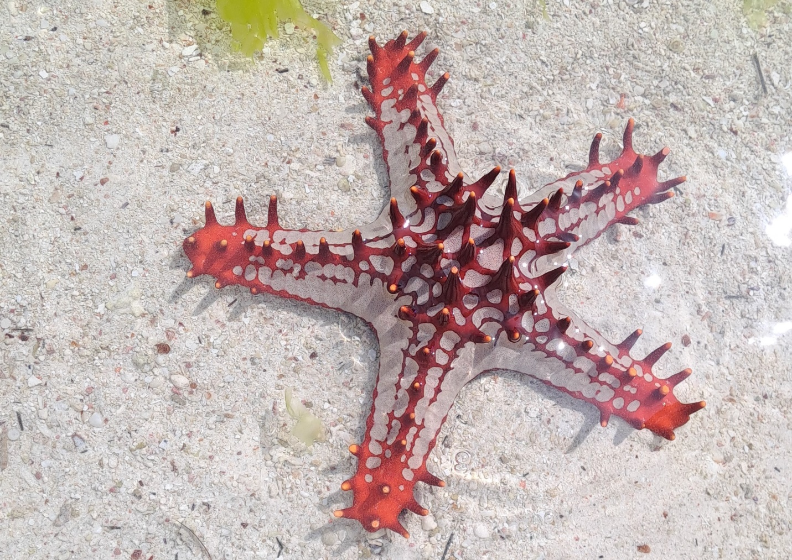
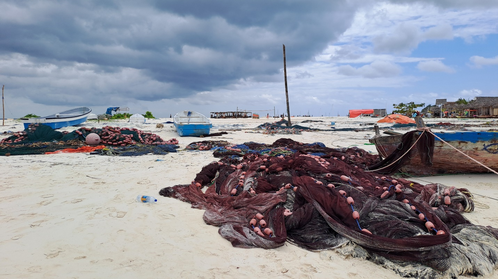

Kendwa
Sledeći dan donosi čist užitak i odmaranje - Kendwa plaža. Odmah pored naše Nungwi plaže, ali idemo prevozom. Moguće je i uz plažu kad se potrefi oseka da je odgovarajuća jer je Nungwi sav u uvalama ograničenim stenama. Mnogo lepo. Nungwi mi se više sviđa od Kendwe zbog tih uvala, a i zbog sela koje je autentično i poseban je doživljaj biti u njemu. Kendwa nema selo.
Išli smo u fensi rizort Sunset - široka bela peščana plaža i suncobrani. Baš i ne nešto primamljivo kad sam čula, ali hajde da vidimo još nešto. Ne volim da se pržim na suncu i uvek tražim prirodni hlad, tako da suncobrani i ja nismo baš u ljubavi. Mali su mi. Pomeraj sebe, pomeraj suncobran. Čuči ispod njega. Ali ovo! Ljudi moji! Ovo nisu suncobrani nego kućice - krovovi ogromni. Sigurno ste u hladu. Ležaljke udobne. E, ovo je luksuz po mojoj meri.
Lokalno stanovništvo sme, a i prolazi tuda plažom, ali ne smeju da se zadržavaju. Vodica je lepa, ali ista kao na Nungwiju. Svidela mi se ležaljka, palme na plaži, eto meni lepih instagramičnih slika.
Dragana, kao iskusni Zanzibarac, je ponela slatkiše i poklone na plažu. Dala je i konobarima. To nisu deca, već su mladići, ali su se toliko radovali da su trčali od sreće, hvalili se, pa su dotrčavali i drugi. Pitam Vladu Zanzibarca: „Zašto se toliko raduju kad ima i kod njih u prodavnici da se kupi bombona i to kg za tri dolara?“ Odgovorio mi je: „Znaš li koliko je to njima obroka?“
Kasnije smo Olbina i ja prošetale do drvenih ribarskih brodića. Lepa šetnja. Međutim kod ribarskih brodića je poprilično smrdelo na mrtvu ribu. Tu smo u vodi videli prelepe, ogromne morske zvezde. Bilo ih je crvenih, zelenih, crnih. Ne smeju da budu dugo van vode jer mogu da uginu. To kažem ako ste poželeli da se slikate sa njima.
Došla sam do ljuljaške gde su bile tri devojčice. Pošto danima pokušavam da naučim pesmu „Džambo, džambo bwana“ i pevušim je, i njima sam krenula da pevam. Otpevaše one sa mnom, a onda mi najstarija zgrabi džepove na haljini, u fazonu „sad plati“. Srećom, imala sam neke krekere i prošli su.
Malo dalje je bilo par kolibica sa slikama i suvenirima. Čuvši da pevušim, jedan trgovac je otpevao sa mnom „Džambo“. Sad sam već sasvim vesela. Naišle smo na žene koje sede i prave narukvice od perlica. Ispitale su nas odakle smo i kako se zovemo. One su: Sabrina, Marija, Ema, Laura, Elizabeta. Kad ja kažem „Sandra“, baš se obraduju, sviđa im se. Kaže Olbina: „Biće sutra Sandra koliko hoćeš.“
U to nam je prišao i Masai David. Rekoh: „Kako to da svi imaju engleska imena?“ Kaže: „Mogu biti ako nisu pokrivene, i nisu muslimanke.“ Kojih je inače više na ostrvu. Hrišćani daju engleska imena jer su dugo bili pod Englezima. On je, recimo, Daudi, ali mu turisti izvrću ime pa im kaže da je David.
U nekom momentu je prošlo puno devojčica iz škole u uniformama sa belim dugačkim maramama na glavi. Jedna je doviknula: „Love you.“ Uzvratila sam joj: „Love you too.“ Ciknula je od sreće i iznenađenja.
I ovde su vrane kradljivice i kradu hranu. Napale su smoki i pojele ga dok su nam saputnici bili na odbojci.
Ananas im je definitivno fantazija. Ne treba ga propuštati, kao ni ceđene sokove.
Videla sam par puta da žena doji na sred ulice, iako joj je pokrivena glava.
Zaboravila sam šešir kod recepcije. Uredno su ga sklonili i vratili mi ga kada sam došla da pitam za njega.



Ne propustite sledeću avanturu!
Kad Sandra krene u novi kraj sveta, vaš inbox prvi sazna. Prijavite se i stižu vam sve nove priče mejlom.